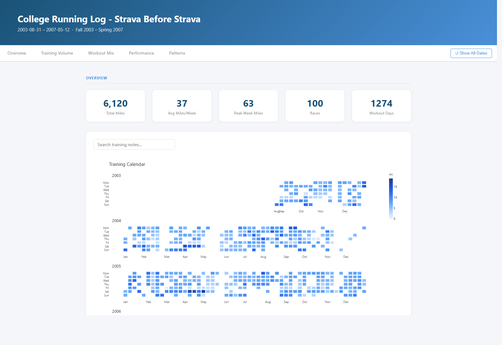
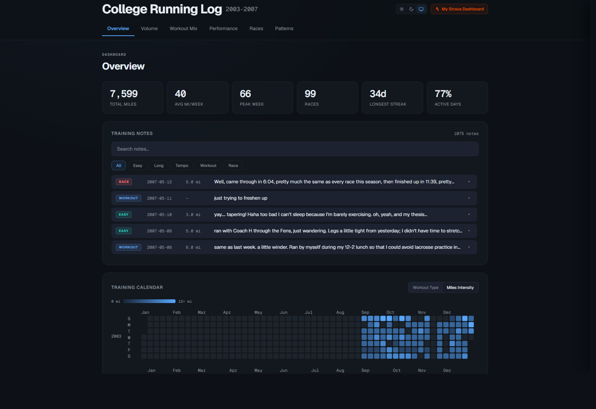

Rebuilding a 2003 college running log with Claude Code
Hand-written HTML, 2003–2007. Verbatim entries below, original styling preserved.
| Wednesday, May 9th | |||||
| Workout: | run | Minutes: | 36:56 | Miles: | 4.5+.5 |
| Comments: | ran with Coach H through the Fens, just wandering. Legs a little tight from yesterday; I didn't have time to stretch and I'm not running in the mornings. | ||||
| Extras: | .5 mile over hurdles | ||||
| Monday, July 4th | |||||
| Workout: | run | Minutes: | 65:15 | Miles: | ~8 |
| Comments: | ran over to Government Center via Sci Museum to see the 4th of July festivities, but I guess i got there too early, nothing was going on yet. built in some strides at the end | ||||
| Extras: | situps, pushups | ||||
| Sunday, September 19th | |||||
| Workout: | long run | Minutes: | 1:45:52 | Miles: | 12.5+ |
| Comments: | drove to the Blue Hills Reservation. Hillier than Boston (in a good way) and slightly loose footing in parts, but it was nice. Cool today | ||||
| Extras: | |||||
4.5+.5 = 4.5 main + 0.5 over hurdles ·
~8 = "about eight" ·
1:45:52 = a value the parser would mis-read 20 years later
Beautiful Soup parser, Plotly charts, Netlify deploy. One session.
Five date-axis charts, all listening to plotly_relayout. When chart A relayouts, it tells B, C, D, E to relayout — which fire their own relayout events — which fire A's again.
// the fix: an early-return guard
chart.on('plotly_relayout', (e) => {
if (e['xaxis.autorange']) return; // ignore spurious
if (syncing) return; // ignore our own echo
syncing = true;
syncOthers(e);
syncing = false;
});90 minutes after starting · deployed to ducktape.netlify.app

First mobile Claude Code session. PR #1 opened, reviewed, merged — all from a screen smaller than a paperback.
Two hooks in ~/.claude/settings.json:
{
"hooks": {
"PostToolUse": [{
"matcher": "Write|Edit",
"hooks": [{ "type": "command",
"command": "case \"$file\" in *Running\\ Log/index.html)
touch ~/.claude/running-log-deploy-pending ;; esac" }]
}],
"Stop": [{
"hooks": [{ "type": "command",
"command": "[ -f ~/.claude/running-log-deploy-pending ] &&
netlify deploy --prod --dir='Running Log' &&
rm ~/.claude/running-log-deploy-pending" }]
}]
}
}
Any edit to index.html ships to Netlify when the turn ends. No CI to set up, no remembering.
One sentence. Two tools. A cross-system handoff begins.
Dark glass · Geist fonts · workout-type palette · React tweaks panel
data-recording-src on <html> at the top of the fileClaude Design didn't just produce a mockup. It produced a specification document: design tokens, component decisions, a README — ready to feed back into Claude Code as instructions.
visualize_log.py rewritten end-to-end against the Claude Design spec. Six sections, SVG heatmap, race classifier, PR cards.
visualize_log.py is the source of truth. index.html is a generated artifact. Early fixes were applied directly to index.html — and silently wiped on the next regeneration.
→ Name your build system at the start of the session.
Long-run times were written as H:MM:SS — perfectly readable. The parser only handled MM:SS, so it silently dropped the hours digit.
def parse_minutes(s):
# "7:42" -> 7.70 minutes ✓
# "1:45:52" -> ??? this never happened, right?
h, m, sec = ... # nope. m, sec = ... only.
return m + sec/60| Input | Parsed as | Pace | |
|---|---|---|---|
1:45:52 | 1.75 min | 0.13 /mi | corrupted |
1:45:52 ✓ | 105.87 min | 7:33 /mi | recovered |
The original log was fine. The bug only existed once we started treating notes-to-self as data.
Every hardcoded hex baked into a Python f-string is a future bug. The contract: every color a var(--…) — state it up front, save yourself three round trips.
| Check | Rescued bug |
|---|---|
check_detail_panel_no_hex |
Hardcoded hex colors that broke in light mode |
check_easy_pace_no_fill |
fill:"tozeroy" on a reversed y-axis painted a blue cap upward |
check_race_count_consistency |
"I thought there were only 99 races." (the donut said 100) |
| Session | Time | Pain (1–5) |
|---|---|---|
| Mar 4 — The spark | ~90 min | 2 |
| Mar 11 — Mobile + zoom sync | ~45 min | 1 |
| Mar 18 — Auto-deploy hook | ~30 min | 2 |
| May 4 — Big redesign | ~3 hrs | 2 |
| May 12 — Polish + QA | ~3 hrs | 2 |
Without AI: a project I'd been "going to do" for 14 years. With AI: a few weekends of fun.
2003–2007 college log · light / dark / system · click-to-detail · QA-tested

The talk about Claude Code is, of course, a Claude Code artifact.
10 minutes of Claude Code fixed what 10 years of Python procrastination couldn't.